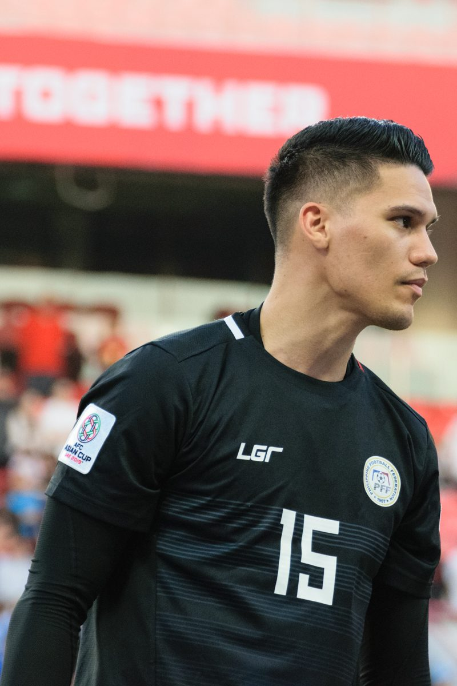

Вьетнам едва не сотворил сенсацию: яркий дебют на юношеском ЧМ и поражение 2:3 от Бельгии
Голы-шедевры Ле Ши Батя и Чу Нгок Нгуен Люка не уберегли азиатскую сборную от обидной осечки в матче с вице-чемпионами Европы в Дохе

Иржи Прохазка и Навахо Стерлинг сделали вес перед главным боем UFC в Катаре
Оба бойца полутяжелого веса показали на весах в Дохе ровно 93 кг перед субботней схваткой на ABHA Arena.

От гор Дагестана до рекорда 29-0: идеальный путь Хабиба Нурмагомедова в MMA
Под пожизненным наставничеством отца Абдулманапа дагестанский чемпион доминировал в UFC, после чего сдержал слово и ушел непобежденным на самом пике.

Хабиб Нурмагомедов отверг предложение Джейка Пола на 200 миллионов долларов за возвращение в ММА
Непобежденный экс-чемпион UFC в легком весе непреклонен: деньги не станут мотивацией для камбэка, точка в карьере поставлена окончательно.

«Свайриенг» громит «Порт» 4:1 и возвращается в борьбу за выход из группы клубного чемпионата АСЕАН
Голы Ратанака, Мартинса Жуниора, Тиаго Алвеса и Пепры принесли камбоджийцам убедительную победу в Пномпене
Главное

Этот день в 2022-м: Катар дал старт первому чемпионату мира на Ближнем Востоке
Дубль Эннера Валенсии в матче открытия положил начало 29-дневному зимнему турниру с рекордными 172 голами и третьим титулом Аргентины.

Эмма Хейз объявила состав сборной США из 23 игроков на отборочный турнир чемпионата мира
Победа в четвертьфинале над Сальвадором 27 ноября гарантирует американкам путевку на женский ЧМ-2027 в Бразилии.

«Спартак» и «Металлург» обменялись четырьмя нападающими: Мальцев и Морозов уходят в Магнитогорск
«Спартак» отдал Михаила Мальцева и права на Ивана Морозова в «Металлург», получив Руслана Исхакова, Игоря Нечаева, права на защитника Всеволода Комарова и денежную компенсацию.

Парагвай испортил прощальный матч Мориясу: Япония уступила 1:2 в Сингапуре
Хуан Хосе Касерес и Густаво Гомес забили за Парагвай на Национальном стадионе, а поздний гол Сио Фукуды головой не спас Японию в 113-м и последнем матче Хадзиме Мориясу во главе сборной.

Две передачи Мичкова помогли «Филадельфии» обыграть «Баффало» 4:3, его результативная серия достигла пяти матчей
21-летний россиянин ассистировал Джейми Драйсдейлу и Кристиану Дворжаку, чья шайба в третьем периоде стала победной.

Ирландский боксёр Ли Ривз скончался в 31 год, через три месяца после травмы в бою в Дублине
Ривз проиграл нокаутом Гэри Калли в августе и три месяца провёл в искусственной коме. Его промоутер Queensberry назвал его образцом для подражания и вдохновением для своего сообщества.
ФутболЕщё →
ТеннисЕщё →


ЕдиноборстваЕщё →
АвтоспортЕщё →
Олимпийские видыЕщё →


ХоккейЕщё →
«Спартак» и «Металлург» обменялись четырьмя нападающими: Мальцев и Морозов уходят в Магнитогорск
Две передачи Мичкова помогли «Филадельфии» обыграть «Баффало» 4:3, его результативная серия достигла пяти матчей

Безголевая серия Овечкина достигла 12 матчей — «Нью-Джерси» обыграл «Вашингтон» 5:2
Истории
От гор Дагестана до рекорда 29-0: идеальный путь Хабиба Нурмагомедова в MMA
Под пожизненным наставничеством отца Абдулманапа дагестанский чемпион доминировал в UFC, после чего сдержал слово и ушел непобежденным на самом пике.
Этот день в 2022-м: Катар дал старт первому чемпионату мира на Ближнем Востоке
Дубль Эннера Валенсии в матче открытия положил начало 29-дневному зимнему турниру с рекордными 172 голами и третьим титулом Аргентины.